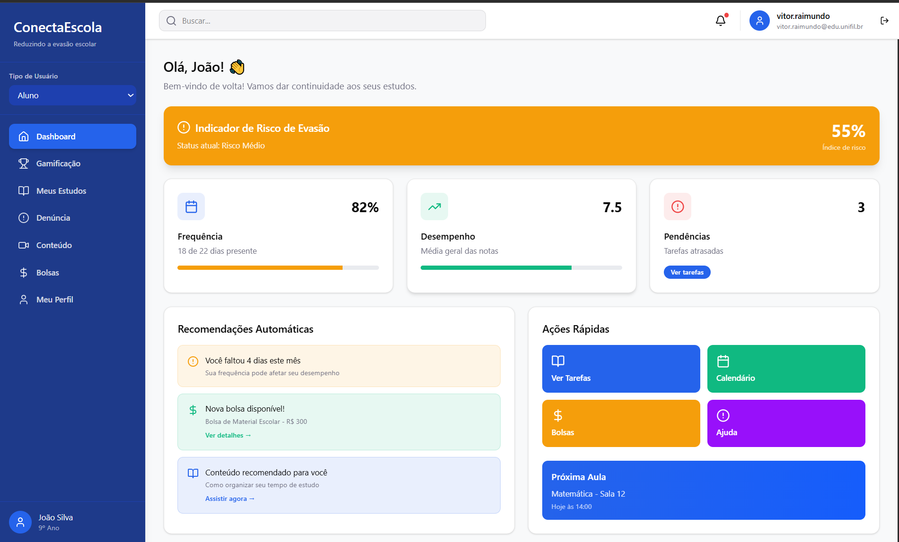

Aplicativo para reduzir Evasão Escolar
Aplicação desenvolvida para a matéria de projeto interdisciplinar, buscando criar ferramentas para ajudar a reduzir os indices de evasão escolar.
Ver ProjetoAlguns trabalhos desenvolvidos durante minha graduação em Engenharia de Software.

Aplicação desenvolvida para a matéria de projeto interdisciplinar, buscando criar ferramentas para ajudar a reduzir os indices de evasão escolar.
Ver ProjetoImplementação em Java para conversão de números em ponto flutuante no padrão IEEE 754.
Implementação acadêmica da estrutura de dados Árvore B utilizando Java.
Você pode acessar todos os meus projetos e acompanhar minha evolução através do meu GitHub.